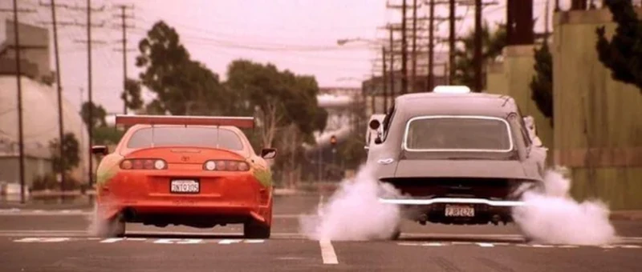
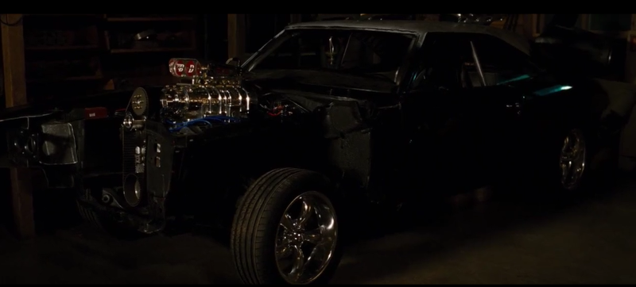
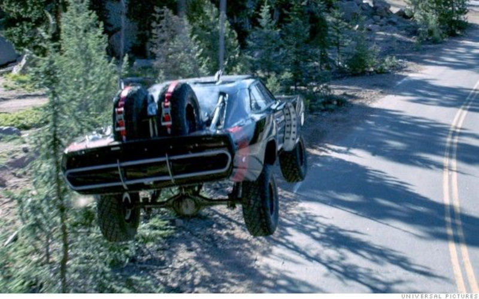
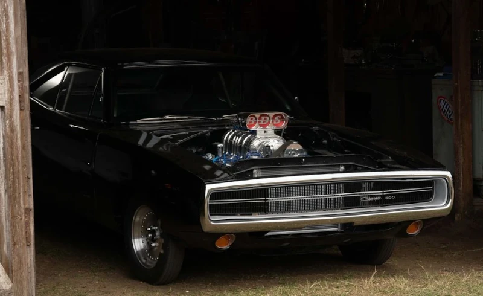

1970 Dodge Charger R/T
Velozes e Furiosos(2001)
O Dodge Charger R/T de 1970 é um dos principais carros dirigidos por Dominic Toretto na franquia Velozes e Furiosos. O Dodge Charger R/T de 1970, que ficava na garagem da casa dos Toretto , foi construído por Dominic e seu pai quando ele era jovem. Quando seu pai morreu em um acidente de corrida envolvendo Kenny Linder , Dominic se recusou a dirigir o Charger porque tinha medo dele. Quando Brian O'Conner se integrou à equipe e até começou a namorar a irmã de Dominic, Mia Toretto , Dominic o levou até a garagem e lhe mostrou o Charger. O carro é famoso por sua incrível potência de 900 cavalos e por deter o recorde de tempo de 1/4 de milha em apenas nove segundos cravados, estabelecido pelo pai de Dom no Los Angeles County Raceway .Quando Johnny Tran e Lance Nguyen fazem um ataque de carro e matam Jesse , começa uma perseguição com Brian e Dom atrás dele. Brian dirige o Toyota Supra e Dom dirige o único carro que sobrou: o Charger. Dom usa o Charger para derrubar Lance da bicicleta e jogá-lo ladeira abaixo. Quando Johnny é morto por Brian, ele e Dom se encontram em um semáforo, prontos para correr. Assim que o sinal abre, Dom empina o carro, demonstrando a potência bruta do R/T. Brian precisa usar o óxido nitroso (nitro) para simplesmente acompanhar o Charger. Eles se aproximam de um trem que vem na direção oposta, mas ambos atravessam a barreira e quase colidem com os trens. Após o pouso, Dom e Brian são vistos sorrindo, pois a corrida havia terminado, mas Dom bate na traseira de um caminhão. Isso o arremessa, junto com o Charger, para o ar, fazendo com que ele capote várias vezes. Embora Dom sobreviva com ferimentos leves, o Charger fica inoperável, momento em que Brian entrega o Supra para Dom, deixando o Charger na estrada.

Velozes e Furiosos 4(2009)
Antes de encontrá-lo na República Dominicana , a então namorada de Dominic, Letty Ortiz , recusou-se a deixar que a polícia de Los Angeles se desfizesse do carro. Em vez disso, ela começou a trabalhar no Dodge Charger por conta própria. Em algum momento, ela deixou o Charger incompleto e viajou para Baja California, no México , o que acabou levando-a à República Dominicana e a Dominic. Após seu retorno aos Estados Unidos, quando Dominic partiu para o Panamá , Letty provavelmente começou a trabalhar no Dodge Charger até ser recrutada por Brian O'Conner para se infiltrar e descobrir a identidade de Arturo Braga , sendo presumivelmente morta posteriormente por Fenix Calderon. Quando Dominic retornou a Los Angeles, Mia explicou que Letty estava trabalhando no Charger parcialmente restaurado antes de sua morte. Após o luto, Dominic termina a reconstrução do carro no lugar de Letty. Quando vão capturar Arturo Braga, Dom dirige o Charger até o México. Ele o usa para seguir atrás do Subaru Impreza WRX STi de Brian , e ambos seguem em direção ao túnel que leva aos Estados Unidos. Em determinado momento, Dom está descendo um dos túneis com explosivos no final. Incapaz de sair do túnel, pois um Chevrolet Camaro RS-Z28 F-Bomb o bloqueia, Dominic salta do Charger para dentro do Camaro, deixando o Charger colidir de frente com os explosivos. Perto do final do filme, o Charger reaparece em perfeitas condições com Brian ao volante, enquanto ele, Mia, Tego Leo e Rico Santos resgatam Dominic de um ônibus a caminho da Prisão de Lompoc.

Velozes e Furiosos 5 (2011)
Brian dirige o Charger na frente de um ônibus da prisão com Dom a bordo e freia bruscamente. O ônibus bate na traseira do Charger, fazendo-o capotar violentamente pela estrada. Após a fuga de Dominic do ônibus, ele toma posse do Charger e dirige até o Rio de Janeiro. Luke Hobbs, do Serviço de Segurança Diplomática (DSS), após analisar as câmeras de segurança e de trânsito, avista o Charger com os rostos cobertos. O software de reconhecimento facial identifica o motorista como Dom e o passageiro como um membro da equipe, Han Seoul-Oh . Hobbs percebe que os associados de Dominic e Brian também estão no Rio. O Charger é visto novamente nas corridas do Rio e foi usado para vencer uma corrida não mostrada, valendo o título de propriedade de um Porsche 911 (996) GT3 RS . O Charger aparece pela última vez no filme quando é atingido pelo carro blindado de Hobbs.
Velozes e Furiosos 7 (2015)
Dodge Charger R/T "Off Road"
Quando Dominic e os outros concordam em ajudar o Sr. Ninguém a resgatar um hacker chamado Ramsey de um terrorista chamado Mose Jakande , o Sr. Ninguém lhe dá um Dodge Charger R/T de 1970 e permite que Dominic use qualquer carro e equipamento da garagem. Tej Parker usa peças de um jipe militar para adicionar mais peso e potência ao Charger. Dom então usa o Charger para sair de ré do hangar de um avião, caindo vários metros antes de acionar seu paraquedas. Em seguida, ele usa o carro para puxar a traseira do ônibus usando um lançador de gancho montado no teto. Depois de resgatá-la, ele é atingido algumas vezes por Deckard Shaw , que apareceu para eliminar Dominic, mas Roman Pearce consegue chegar como reforço. Dom então é cercado por um grupo de terroristas enquanto tenta escapar com Ramsey e decide dirigir por um penhasco íngreme, fazendo o carro capotar várias vezes. Embora Dom e Ramsey sobrevivam, o carro acaba sendo completamente destruído.

Velozes e Furiosos 9 (2021)
O carro é visto pela primeira vez estacionado na garagem de Dom e Letty, em sua fazenda na Tailândia. Mais tarde, Dom aparece sentado no capô do Charger, ouvindo repetidamente a mensagem de socorro do Sr. Ninguém , na qual descobre que Jakob foi o responsável pelo acidente de avião.O Charger não é visto novamente até o final do filme, onde está estacionado na garagem do número 1327 e o pequeno Brian está brincando com uma miniatura do Charger junto com Letty, que tem um foguete de brinquedo.
